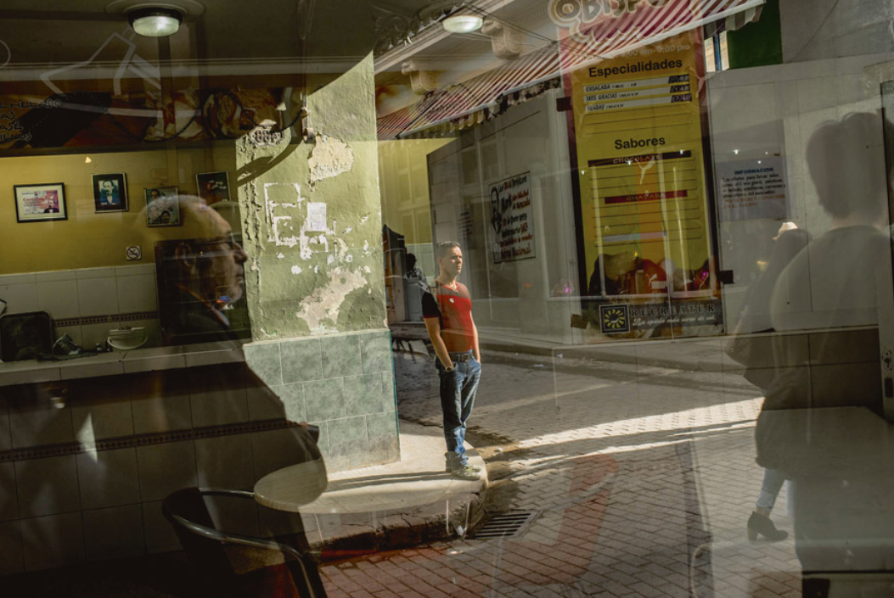

“The future of our country must necessarily be a future of scientists, thinkers, because that is precisely what we are sowing; we are sowing opportunities for intelligence,” proclaimed Fidel Castro on January 15, 1960. In 1959, the country had three universities, compared to more than sixty today. The literacy rate jumped from around 70% to over 99% in 2012 (the latest available figures). That of the neighboring island, Haiti, stagnates at 62%1.
1 On the occasion of the 20th anniversary of the Cuban Speleological Society, Academy of Sciences. http://en.granma.cu/special-in-honor-of-fidel-s-90th-birthday/2016-08-12/a-talent-for-doing-the-impossible
2 According to the United Nations Development Programme.
3 For example, from 2007-2012, Cuba invested 11.9% of its GDP in education, a world record.
Today, Havana exports doctors and researchers worldwide (see Hernando Calvo Ospina’s article on page 52). Cuba’s successes in the biomedical field are largely due to state efforts in public education (which represent more than 10% of the gross domestic product2). The country is now on par with the United States in terms of life expectancy (78.5 years) and infant mortality (5 per 1,000)3. Thus, doctors constitute a true economic boon for the island (the primary source of foreign exchange, ahead of remittances and tourism).
Thanks to a 2000 agreement with Hugo Chávez’s Venezuela, the island long received up to one hundred thousand barrels of oil per day (at subsidized prices) in exchange for which more than ten thousand Cuban doctors and academics work on Venezuelan soil4.
4 Statistics from the World Health Organization, 2016.

Director of the Cuban Neuroscience Center (CNEURO) in Havana, Dr. Mitchell Valdés-Sosa, 67, has been a privileged witness to the history of Cuban science development. Exiled to Chicago under the dictatorship of Fulgencio Batista (1952-1959), his father returned to the island in 1961 to practice obstetrics and address the exodus of the medical bourgeoisie fleeing the revolution5. He witnessed the creation of the Centro Nacional de Investigaciones Científicas (CNIC, equivalent to the National Center for Scientific Research, CNRS) in 1965, the arrival of numerous researchers and doctors sent by the USSR of Leonid Brezhnev or Chile of Salvador Allende to train the first generation of local specialists, and the defense of the island’s first PhD in 1971. In the early 1980s, Cuban research moved away from the Soviet model, deemed too centralized, too bureaucratic, and too rigid. The government increasingly granted autonomy to researchers whom it consulted frequently.
5 It is estimated that Cuba lost more than a third of its doctors between 1959 and 1961.
During the prosperous years preceding perestroika and the “special period,” Valdés-Sosa and his brother Pedro contributed to some of the major achievements in local neuroscience, such as building the first Cuban computer-assisted brain imaging system and designing algorithms for processing neural signals still used today.
The budget for Cuban research remains limited. Thus, the government promotes short circuits in which fundamental research, applied research, and production chains are concentrated in one place. For instance, CNEURO brings together biologists, mathematicians, physicists, doctors involved in various clinical trials, and several specialized technicians. Valdés-Sosa proudly notes that CNEURO produces “some six thousand prostheses and hearing aids each year, allowing for early diagnosis of deafness in very young children.”
BioCubaFarma, the public company that encompasses all actors in the biomedical industry, holds over two thousand patents and exports several hundred different products to Brazil, Vietnam, South Africa, Venezuela, Algeria, and Iran. China, a privileged partner of Cuba, has just been authorized to open a pharmaceutical company on Cuban territory. Given the low cost and good training of health professionals in Cuba, Canadians are also interested, as are some French companies.
Cancer Vaccine Since the December 2014 agreements that led to the reopening of the US embassy in Havana and a thaw in relations between the United States and Cuba, two promising Cuban molecules have been undergoing clinical trials in the United States: a lung cancer vaccine and a drug for diabetic gangrene6. In return, administrative easing was supposed to allow American companies to export a broader range of products to Cuba, until Mr. Donald Trump backtracked in Miami on June 16, 2017. While the academic world enthusiastically welcomed these agreements that lay the groundwork for scientific cooperation between the two countries, there is still a long way to go. Washington never forgets to remind that “Cuba is a dictatorship,” and the Congress recently invoked the Cuba Democracy Act (1992) to impose a contractual clause enjoining Cuban pediatricians not to use American equipment they receive to torture their patients7… This provoked the indignation of doctors and researchers.
6 Cohen et al., 2015. Advancing neuroscience interactions with Cuba. Proceedings of the National Academy of Science (link)
7 See the article in Science, which mentions the previous difficulties associated with exporting biomedical equipment. http://www.sciencemag.org/news/2014/12/researchers-applaud-us-cuba-accord
However, despite the altruistic vocation8 of the “revolutionary medicine” initially promoted by Ernesto “Che” Guevara, the Cuban scientific system is not without contradictions. Doctors are often sent abroad as part of a two-year civic service, during which they are housed in closely monitored camps and are required not to leave their assigned region under penalty of sanctions. Not to mention the measures devised by Washington to motivate would-be deserters9, whose remuneration is around 60 euros per month (they receive several hundred euros when on mission abroad).
9 Like when Cuba sent more than 400 doctors to combat the Ebola epidemic on African soil.
In addition to uncertainties related to the Trump administration’s reluctance towards US-Cuban trade and tourism, the hopes following the opening of the biomedical sector are “darkened by financial difficulties,” explains Pascal Belin, research director at the Timone Neuroscience Institute (INT) in Marseille. Belin, who has been collaborating with his counterparts in Havana for over ten years, believes that Cuban laboratories are full of “talented researchers who would make excellent additions to French institutions,” but their development depends, according to him, on the establishment of international partnerships, particularly focused on the exchange of skills and equipment. Not to mention more flexible emigration procedures on the Cuban side.
While the INT donated an electroencephalogram device to Dr. Valdés-Sosa’s team, Belin notes that other countries are ahead of France in the field of cooperation with Cuba. Maastricht University (Netherlands), for example, offered an MRI scanner worth several million euros to CNEURO and created a joint doctoral program that benefits from Cuba’s expertise in so-called “multimodal” neuroimaging10.
10 Combination of several simultaneous brain activity measurements, such as electroencephalogram and MRI
To better predict the onset and progression of neurodegenerative diseases, such as Alzheimer’s — increasingly common due to the aging population — the Cuban government launched in 2004 a vast program to census all the twins on the island. With almost all (95%) of them recorded, over a hundred thousand individuals can now be mobilized to study genetic heredity and gene-environment interactions in one of the most racially diverse countries. In the specific field of cognitive neuroscience, a long-term partnership with Cuba would offer the possibility of thoroughly examining the intercultural differences between European countries and one of the last communist societies, paving the way for a better understanding of the complex dynamics governing the relationship between social structures and individual behaviors.